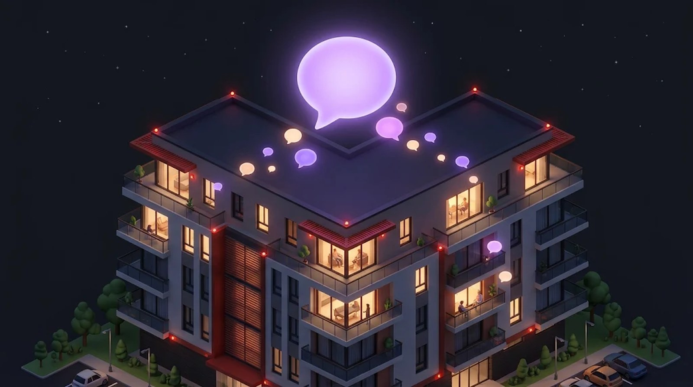

«Клиентов стало меньше», «люди экономят», «реклама не окупается». Это я слышу от психологов последние полгода почти каждую неделю. И цифры вроде бы с ними согласны: даже крупные онлайн-сервисы по итогам 2025 года потеряли выручку.
Но когда я стала копать глубже, увидела совсем другую картину. Спрос на психологов не упал. Он ушёл в другую сторону. И те, кто заметит это первыми, спокойно заберут клиентов в 2026–2027 году, пока остальные ждут, когда «всё наладится».
Расскажу, куда именно ушёл спрос, и покажу четыре способа находить клиентов без бюджета на рекламу. Один из них психологи сильнее всего недооценивают, хотя он у каждого лежит прямо в телефоне.
Клиенты не исчезли. У них поменялись запросы
У «Ясно» выручка за 2025 год снизилась на 2,1%, у Alter — на 11,5%. Про онлайн-психологов в соцсетях стали писать на 20% реже, и в 2026 году это продолжилось (Inc., данные «Медиалогии»).
А теперь посмотрите, что происходит с самими людьми. Тревожных становится только больше:
- в январе 2026 года тревожные настроения были у 42% россиян, в мае — уже у 51%, а весной доходило до 53% (ФОМ, Inc.);
- книги о том, как справиться с тревожными мыслями, в январе–марте 2026 года покупали на 85% чаще, чем годом раньше, а в апреле–июне спрос вырос ещё на 19% («Читай-город», The Moscow Times);
- на горячую линию психологической помощи Красного Креста в 2025 году позвонили 52 424 раза — почти в полтора раза чаще, чем годом раньше. Чаще всего людям нужна была помощь, чтобы привыкнуть к жизни после кризисных событий, таких звонков было почти 29 тысяч (РАПСИ);
- а словом 2025 года издательство вообще выбрало «тревожность» (KudaGo).
У нас в Казахстане то же самое. По данным Минздрава, в первом квартале 2026 года психические расстройства впервые выявляли на 15,7% чаще, чем годом раньше (BES.media). А в государственных центрах за 2025 год провели 48 019 очных консультаций психологов (Bizmedia.kz).
И заодно психологов самих стало больше. В России с начала 2026 года ИП и компаний в сфере психического здоровья стало на 35% больше (Точка Банк).
Спрос не упал. Он ушёл в другую сторону
Рынок психологов в 2025 и первой половине 2026 года
Людей, которым нужен психолог, стало больше. Просто они приходят уже не с тем, с чем приходили два года назад, и ищут не там.
Каких психологов ищут сейчас
Поменялся и сам клиент. За три года доля молодых, 18–24 лет, выросла с 20,3% до 29,4%. Мужчин среди новых клиентов с 2020 по 2025 год стало больше на 8% (Mentoday). У миллениалов самый частый запрос — самооценка (исследование Alter и Kion, Sostav).
И ещё одна цифра, над которой стоит подумать. В апреле 2026 года больше половины россиян уже хоть раз искали психологическую поддержку у ИИ, и 37% пришли туда не из любопытства, а с конкретной проблемой (Sostav). То есть проблема есть, человек ищет помощь, но до живого специалиста не доходит.
Вот тут и спрятана главная ошибка. Психолог годами пишет «работаю с отношениями и самооценкой», а человека сегодня крутит тревога из-за новостей, денег, работы, переезда. Он просто не узнаёт себя в вашем описании и проходит мимо. А видов тревожности сейчас стало гораздо больше.
Поэтому первое, с чего я советую начать: пересоберите свои темы под то, с чем люди живут прямо сейчас. А дальше — где этих людей найти, если денег на рекламу нет.
Способ 1. Ваша записная книжка
Именно про него я говорила в начале. Если вы уже хоть какое-то время работаете, у вас есть своя база. Я сейчас не про подписчиков, а про контакты в телефоне: парикмахер, мастер по ногтям, учительница ребёнка, соседи, бывшие коллеги. У каждого из них свой круг, и этот круг им доверяет.
В кризис, когда денег на рекламу нет, настоящие социальные связи работают лучше всего. Но для этого надо быть смелым и заявить о себе.
Как это выглядит на практике. Вы пишете знакомым: «Я провожу бесплатную лекцию про тревогу, можешь выложить у себя?» И они выкладывают это в статус WhatsApp, в сторис Telegram, в Max — где у кого сидят свои люди. И ваше приглашение видят сразу сотни людей, до которых вы бы сами никогда не дотянулись.
Обратите внимание: зовём именно на лекцию, а не на консультацию. Реклама в лоб «запишитесь ко мне» работает гораздо хуже. А «моя знакомая психолог расскажет, что делать с тревогой, приходите» друзьям пересылают легко. На такой встрече вы собираете всех, кому тема откликается, и дальше с ними уже можно работать.
Бизнес давно так делает, это называется партнёрский маркетинг: компании рекомендуют друг друга своим клиентам. У частного психолога есть ровно такая же возможность, только через свои контакты.
Способ 2. Чаты, в которых люди сидят каждый день

Домовой чат, где соседи спорят про коммуналку. Родительский чат школы. Чат района. Тематические группы в Telegram и Max. Там люди общаются каждый день и при этом постоянно делятся своими тревогами: цены, дети, работа.
Попроситесь туда, договоритесь с админом и дайте о себе знать через пользу. И снова: не бесплатная консультация, а бесплатная лекция для всех. На консультацию надо решиться и рассказать незнакомому человеку про своё. На лекцию просто приходят послушать. Стресса от решения намного меньше, а людей приходит больше.
И ещё один плюс: в таком чате вы не реклама, вы соседка, которая разбирается в тревоге. К такому человеку потом и идут.
Способ 3. Threads, где клиент узнаёт себя
Threads для психолога — отличная площадка, но только если не рекламироваться в лоб. Реклама там работает, когда она вшита в историю.
Вы рассказываете ситуацию, в которой человек узнаёт себя. Такие истории часто собирают очень большой охват и отклик, их обсуждают и разносят дальше. А внутри истории стоит мягкая вставка: приглашение на бесплатную лекцию или ваш контакт.
История продаёт лучше объявления. Человек дочитал, узнал себя и сам пришёл. Про то, как такие истории строить, я подробно пишу у себя в Telegram, ссылка в конце статьи.
Способ 4. Отзывы клиентов — самое сильное, что у вас есть
Если бы мне надо было выбрать один инструмент, я бы выбрала этот.
Особенно работает, когда клиент решается хоть немного приоткрыть занавес: с чем пришёл, как вместе со специалистом с этим справился и что ему больше всего понравилось в работе именно с вами. А в конце оставляет ваш контакт. Такой отзыв продаёт моментально, так было всегда и так есть сейчас.
Вспомните, почему реклама у блогеров в формате личной рекомендации всегда настолько хорошо работала. Люди верят не словам специалиста о себе, а человеку, который уже прошёл тот же путь.
Просите отзыв, когда у клиента уже есть результат. Подскажите, о чём написать: с чем пришёл, что изменилось, что понравилось. И обязательно спросите, можно ли публиковать, и предложите вариант без имени.
А как же соцсети?
Развивать их можно и нужно, но в кризис это история подлиннее. Клиенты из записной книжки, чатов и отзывов приходят быстрее.
И ещё одно. Время, когда всё решало число подписчиков, прошло. Сегодня конкурируют не аккаунты, а единицы контента: один сильный пост или карусель на маленьком аккаунте спокойно приводит клиентов.
Про Instagram, TikTok, Telegram и другие соцсети, их алгоритмы и форматы единиц контента я подробно пишу в своём Telegram-канале. Там каждый найдёт формат под себя.
Что сделать за ближайший месяц
- Первая неделя: пересмотрите свои темы и придумайте бесплатную лекцию про то, что тревожит людей сейчас.
- Вторая неделя: напишите 20–30 знакомым и попросите выложить приглашение у себя.
- Третья неделя: зайдите в 3–5 чатов и позовите на лекцию там.
- Четвёртая неделя: соберите отзывы и выложите одну историю в Threads.
Частые вопросы
Можно ли найти клиентов психологу без соцсетей? Можно. В кризис быстрее всего срабатывают знакомые, чаты и отзывы. Соцсети помогают расти, но на старте без них можно обойтись.
Почему у меня нет клиентов, хотя я хороший специалист? Чаще всего люди не узнают себя в ваших темах или просто не знают о вас. Начните с тем, потом расскажите о себе тем, кто вас уже знает.
Что лучше: бесплатная консультация или бесплатная лекция? Для людей, которые вас ещё не знают, — лекция. На неё легче прийти.
Где психологу рекламироваться без бюджета? В статусах и сторис знакомых, в домовых и районных чатах, в историях в Threads и через отзывы клиентов.
Хотите разобрать именно ваше продвижение?
Посмотрю, что у вас уже есть, и подскажу, с чего начать, чтобы клиенты приходили без бюджета на рекламу.
Читать Telegram-канал → Мои кейсы